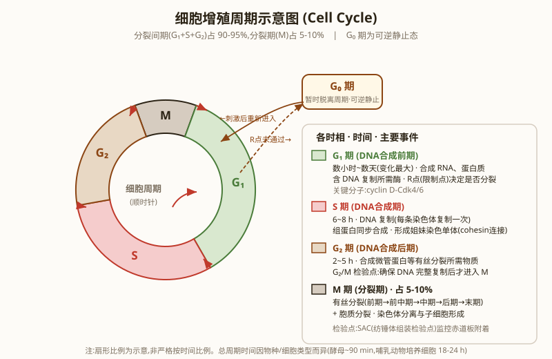
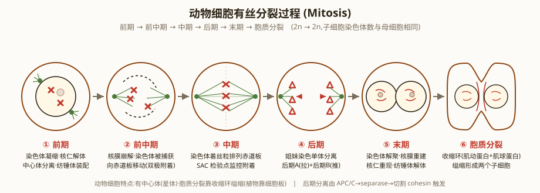

细胞增殖及其调控
一、细胞周期概述
细胞增殖（cell proliferation）是生命活动的重要特征，是生物体生长、发育、繁殖和遗传的基础。细胞以分裂的方式进行增殖。
细胞分裂有三种主要方式：
- 无丝分裂（amitosis）：分裂过程中不出现纺锤体和染色体的变化（也称直接分裂）。常见于原核生物、纤毛虫等。
- 有丝分裂（mitosis）：真核生物体细胞增殖的主要方式。分裂过程中有纺锤体和染色体形态变化。
- 减数分裂（meiosis）：有性生殖生物产生配子时进行的特殊分裂方式。染色体数减半。
细胞周期（cell cycle）是连续分裂的细胞从一次分裂完成时开始到下一次分裂完成时为止所经历的全过程。
真核细胞的一个细胞周期分为两个阶段：
- 分裂间期（interphase）：G₁期 + S期 + G₂期，占细胞周期的 90-95% 时间
- 分裂期（M期）：有丝分裂期，约占 5-10%

根据细胞增殖状态，可将细胞分为三类：
- 周期细胞（cycling cell）：持续进行细胞周期，如上皮、造血干细胞
- G₀期细胞：暂时脱离细胞周期、停止分裂，但保持增殖能力，在适当刺激下可重新进入周期。如肝、肾细胞
- 终末细胞（terminally differentiated cell）：永久脱离细胞周期，不再分裂。如神经元、心肌细胞、骨骼肌细胞
细胞周期时间（Tc）因物种、细胞类型而异：
- 细菌（如大肠杆菌）：~20 min
- 酵母：90-120 min
- 哺乳动物培养细胞：18-24 h
- 肝细胞：约 1 年
二、分裂间期（Interphase）：G₁、S、G₂ 期
分裂间期看似静止，实际上代谢旺盛，进行着复杂的生化合成和细胞器复制。
（一）G₁期（DNA 合成前期）
- 持续时间：变化最大（数小时-数天），是细胞周期的主要调控点
- 主要事件：合成 RNA 和蛋白质（包括 DNA 复制所需的酶类）
- 限制点/检验点（restriction point, R点）：G₁ 后期的一个关键决定点。通过 R 点的细胞将完成 DNA 复制并分裂；未通过的细胞进入 G₀ 期
- 关键分子：G₁期周期蛋白 D（cyclin D）、Cdk4/6 复合物驱动 R 点通过
（二）S期（DNA 合成期）
- 持续时间：通常 6-8 h
- 主要事件：DNA 复制（每条染色体的 DNA 复制一次，精确复制）；组蛋白合成（与 DNA 同步）
- 关键酶：DNA 聚合酶 α、δ、ε；DNA 连接酶；拓扑异构酶
- 每个染色体形成两条姐妹染色单体，通过黏连蛋白（cohesin）连接
（三）G₂期（DNA 合成后期）
- 持续时间：约 2-5 h
- 主要事件：合成 RNA 和蛋白质（包括纺锤体微管蛋白、有丝分裂所需的酶类）
- 关键检验点：G₂/M 检验点，确保 DNA 完整复制后才进入 M 期
三、染色体结构与类型
染色体（chromosome）是细胞在有丝分裂或减数分裂过程中，由染色质聚缩而成的棒状结构。
染色体的结构层次：核小体（DNA + 组蛋白八聚体）→ 染色质纤维（30 nm 螺线管）→ 超螺线管 → 染色单体（分裂期）
染色体的主要结构：
- 着丝粒/着丝点（centromere/kinetochore）：染色体缩缢处，纺锤体微管附着点。包括着丝粒 DNA（α 卫星 DNA 重复序列）和动粒蛋白复合体（CENP-A、CENP-B、CENP-C）
- 主缢痕（primary constriction）：着丝粒所在位置
- 次缢痕（secondary constriction）：核仁组织区（NOR），与 rRNA 基因相关
- 端粒（telomere）：染色体末端的特殊结构（TTAGGG 重复序列），保护染色体末端不被降解或融合
- 随体（satellite）：次缢痕远端的球状小体
染色体的四种类型（按着丝粒位置）：
- 中着丝粒染色体（metacentric）：着丝粒位于中部，两臂等长
- 亚中着丝粒染色体（submetacentric）：着丝粒偏中，两臂不等长
- 亚端着丝粒染色体（acrocentric）：着丝粒靠近一端
- 端着丝粒染色体（telocentric）：着丝粒位于末端
特殊染色体类型：
- 常染色体（autosome）：与性别决定无关的染色体（人 22 对）
- 性染色体（sex chromosome）：与性别决定相关（人 X、Y）
- 多线染色体（polytene chromosome）：见于双翅目昆虫（如摇蚊、果蝇幼虫）唾腺，DNA 多次复制但不分离，形成巨大染色体（每条含 1000-2000 条染色单体），上有"胀泡"（puff），是基因活跃转录区
- 灯刷染色体（lampbrush chromosome）：见于鱼类、两栖类（特别是蝶螈、蛙）卵母细胞第一次减数分裂双线期。两条同源染色体配对形成 4 条染色单体，每条染色单体侧环成对（matrix）。是研究 RNA 转录的经典材料
- B 染色体：超过正常染色体数目的额外染色体（也称副染色体、超数染色体）。在许多动植物中存在，对表型影响小
- 性染色体类型：① XY 型（哺乳动物、果蝇、多数被子植物）；② ZW 型（鸟类、蝶类、爬行类）；③ XO 型（蝗虫）；④ X：Y = 1：1 = 性别
性染色体决定的性别类型：
- XX-XY 型：XX 为雌，XY 为雄（哺乳类）
- ZW-ZZ 型：ZW 为雌，ZZ 为雄（鸟、蛾、蝶）
- XX-XO 型：XX 为雌，XO 为雄（部分昆虫）
- 单倍-二倍型：雌为 2n，雄为 n（蜜蜂蚂蚁）
- 环境决定型：温度等环境因子（龟、鳄鱼）
染色体数目与核型：
每种生物的染色体数目是恒定的，且体细胞为 2n，生殖细胞为 n。人 2n = 46（44 常染色体 + XY/XX），果蝇 2n = 8，豌豆 2n = 14，水稻 2n = 24，小麦 2n = 42。
核型（karyotype）：一个体细胞中的全部染色体，按其大小、形态特征顺序排列所构成的图像。常用核型分析方法有：
- ① 荧光显带法（Q 带）：用喹吖因（quinacrine）染色，富 AT 序列区发强荧光
- ② 吉姆萨氏染色法（G 带）：用 Giemsa 染色，AT 富集区深染
- ③ 反带法（R 带）：与 G 带相反，GC 富集区深染
- ④ 末端显带法（T 带）：专门显示染色体末端
- ⑤ C 带法：专门显示着丝粒附近的结构异染色质
染色体带型是核型分析的基础，可用于：① 鉴定染色体；② 诊断染色体病（如 21 三体综合征）；③ 研究染色体结构变异。
染色体的多倍体与单倍体：
- 一倍体（1N）：配子中的染色体数（如人 n=23）
- 二倍体（2N）：体细胞中含两套染色体（如人 2n=46）
- 多倍体：含 3 套或以上染色体组（如 3N、4N）。多倍体在植物中常见（小麦 6N=42），动物中罕见（两栖类、鱼类有）。人工诱导多倍体用秋水仙素抑制纺锤体形成
- 单倍体（haploid）：含配子染色体数的个体（不管由什么发育而来）
- 非整倍体（aneuploid）：染色体数不是整数倍（如 2n+1、2n-1、2n-2）。如 21 三体综合征（唐氏综合征）
关键易混：单倍体 vs 一倍体。一倍体必须是配子中的染色体数；单倍体可由配子直接发育（如蜜蜂雄蜂 n=16）或多倍体的配子发育（如四倍体植物的花药离体培养产生 2N 单倍体）。
基因组（genome）的概念：
一个细胞中所含的全部遗传物质（DNA）称为基因组。
- 核基因组（nuclear genome）：细胞核内的染色体 DNA
- 线粒体基因组（mitochondrial genome, mtDNA）：线粒体 DNA（小环状，哺乳动物 16.5 kb）
- 质体基因组（plastid genome）：叶绿体等质体的 DNA
- 病毒基因组：DNA 病毒或 RNA 病毒的遗传物质
人类基因组计划（HGP）完成了 30 亿碱基对的测序，但核基因组（nuclear genome）只指 22+X+Y 共 24 种染色体的 DNA。
四、有丝分裂过程（Mitosis）
有丝分裂是真核生物体细胞增殖的主要方式，通过分裂产生两个染色体数与母细胞相同的子细胞。
有丝分裂分为前期、前中期、中期、后期、末期和胞质分裂六个阶段。

（一）前期（Prophase）
- 染色质螺旋化凝缩成可见的染色体（每条染色体含两条姐妹染色单体）
- 核仁逐渐解体，核膜开始消失
- 中心体（centrosome）发出星体微管（astral microtubule），两对中心体向两极移动，开始装配纺锤体（mitotic spindle）
- 纺锤体由 3 种微管组成：① 动粒微管（kinetochore microtubule）——连接染色体动粒与中心体；② 极微管（polar/interpolar microtubule）——连接两极；③ 星体微管（astral microtubule）——连接中心体与细胞皮层
（二）前中期（Prometaphase）
- 核膜完全破裂（核孔复合体解聚）
- 染色体进一步凝集浓缩，核纤层蛋白（lamin）被 CDK1 磷酸化，核膜解体
- 动粒微管"捕获"染色体动粒，形成连接
- 染色体开始向赤道板方向移动（"之字形"双向运动，搜索与捕获）
（三）中期（Metaphase）
- 所有染色体的着丝粒排列在赤道板（equatorial plate）上
- 每条染色体的两个动粒分别连接来自两极的动粒微管，形成"双极附着"（bi-orientation）
- 姐妹染色单体在动粒微管张力下处于"等待分离"状态
（四）后期（Anaphase）
后期分两个阶段：
- 后期 A：动粒微管缩短 → 染色单体（现称"子染色体"）的动粒被拉向两极
- 后期 B：极微管延长、滑动（动力蛋白 dynein 参与） → 两极距离加大
关键事件：姐妹染色单体在着丝粒处分离，由黏连蛋白（cohesin）被分离酶（separase）切割所致。
关键调控：后期促进复合物（APC/C）激活 → 触发 separase 激活 → cohesin 切割 → 染色单体分离。
关键检验：纺锤体组装检验点（SAC）——监控所有染色体的双极附着，未完成则阻止 APC/C 激活。
（五）末期（Telophase）
- 两组子染色体分别到达两极
- 染色体解聚缩，松散为染色质
- 核纤层蛋白去磷酸化，重新组装核纤层
- 核膜片段（前期核膜破裂产生的膜泡）重新融合，形成两个子核的核膜
- 核仁重新出现（核仁组织区开始转录 rRNA）
- 纺锤体解体，微管解聚
（六）胞质分裂（Cytokinesis）
胞质分裂在后期开始、末期完成，机制因细胞类型而异：
- 动物细胞：收缩环（contractile ring）机制。赤道板下方细胞皮层的肌动蛋白纤维和肌球蛋白 II 组装成收缩环 → 水解 ATP 收缩 → 缢缩（"分裂沟"）→ 形成两个子细胞
- 植物细胞：细胞板（cell plate）机制。高尔基体/内质网囊泡在赤道面聚集 → 融合形成细胞板 → 融合细胞壁前体 → 形成中胶层 + 初生壁 → 子细胞分隔
- 真菌：隔膜（septum）形成。与植物类似但有隔膜孔
（七）植物细胞有丝分裂的特点：
- ① 无中心粒：高等植物细胞没有中心粒，但能通过微管组织中心（MTOC）正常装配纺锤体
- ② 形成细胞板：胞质分裂在细胞内形成新的细胞壁，而非表面缢缩
- ③ 不出现中心体：纺锤体由分散的微管组织中心产生
（八）特殊细胞的有丝分裂：
- 早期胚胎细胞：细胞周期极短（~8 h），无 G₁、G₂ 期；M 期长（占 50%）。胚胎后期才出现 G₁、G₂ 期
- 甲藻（dinoflagellate）：间核生物。核膜不破裂，染色体附着于核膜上；纺锤体在核外形成；染色体在核内分离
- 硅藻（diatom）：核膜不消失，微管在核内产生，动粒与微管相连
五、减数分裂（Meiosis）
减数分裂是有性生殖生物产生配子时进行的特殊分裂方式，特点是DNA 复制一次、细胞连续分裂两次，子细胞染色体数减半。
减数分裂的产物：1 个母细胞 → 4 个子细胞，染色体数从 2n 减为 n。
减数分裂的生物学意义：
- ① 维持物种染色体数恒定：通过受精作用 n + n = 2n
- ② 产生遗传多样性：同源染色体非姐妹染色单体之间的交叉互换 + 后期Ⅰ非姐妹染色单体的自由组合
（一）减数分裂Ⅰ（减数第一次分裂）
同源染色体分离，导致染色体数减半（2n → n）。
- 前期Ⅰ（Prophase Ⅰ）：最复杂、最长，分为 5 个亚期：
- 细线期（leptotene）：染色体凝缩，呈细线状
- 偶线期（zygotene）：同源染色体配对（联会 synapsis），形成 2n 个二价体
- 粗线期（pachytene）：联会完成，染色体变粗，同源染色体非姐妹染色单体之间发生交叉互换（crossing over）。此时形成联会丝复合体（SC）
- 双线期（diplotene）：同源染色体开始分离，但交叉点（chiasma）保持联系；Holliday 模型 1964 年提出
- 终变期（diakinesis）：染色体最大程度凝缩，核膜解体，纺锤体形成
- 中期Ⅰ：四分体排列在赤道板上，同源染色体的动粒朝向两极
- 后期Ⅰ：同源染色体分离（不是染色单体分离），自由组合到两极
- 末期Ⅰ：形成两个子核，染色体数减半（n）
（二）减数分裂Ⅱ（减数第二次分裂）
类似有丝分裂，姐妹染色单体分离。
- 前期Ⅱ：染色体重新凝缩，纺锤体形成（无 DNA 复制）
- 中期Ⅱ：染色体排列在赤道板，姐妹染色单体的动粒朝向两极（与中期Ⅰ不同：中期Ⅰ是同源染色体的动粒朝向两极）
- 后期Ⅱ：姐妹染色单体分离，被拉向两极
- 末期Ⅱ：形成 4 个子细胞，染色体数均为 n
（三）减数分裂的产物：
- 雄性动物：4 个大小相等的精细胞，进一步发育为 4 个精子
- 雌性动物：4 个大小悬殊的子细胞，1 个大的卵细胞 + 3 个小的极体（第一极体再分裂成 2 个第二极体，第二极体退化）
- 植物：产生 4 个孢子（spore），进而发育为配子体
（四）减数分裂与有丝分裂的比较：
| 特征 | 有丝分裂 | 减数分裂 |
|---|---|---|
| DNA 复制 | 1 次 | 1 次 |
| 细胞分裂 | 1 次 | 2 次（连续） |
| 子细胞数 | 2 个 | 4 个 |
| 子细胞染色体数 | 2n（同母细胞） | n（减半） |
| 联会 | 无 | 有（前期Ⅰ偶线期） |
| 交叉互换 | 无 | 有（粗线期） |
| 同源染色体分离 | 无 | 有（后期Ⅰ） |
| 非姐妹染色单体分离 | 无 | 有（后期Ⅱ） |
| 非整倍体来源 | 有丝分裂错误 | 减数分裂错误（更多） |
| 发生对象 | 体细胞 | 生殖母细胞（精/卵原细胞） |
（五）减数分裂发生的时间（按生物类型分）：
- ① 终端减数分裂：减数分裂发生在配子形成时。配子为 n，孢子体（2n）为营养体。如：人、动物、被子植物（花粉母细胞和胚囊母细胞）
- ② 始端减数分裂（合子减数分裂）：减数分裂发生在合子形成后。合子→减数分裂→配子→受精→2n 合子；2n 只在合子期短暂存在。如：衣藻、绿藻、水绵、轮藻
- ③ 中间减数分裂（居间减数分裂）：减数分裂发生在配子形成前。孢子体→无性孢子→配子体→配子。如：石莼、海带、鹿角蕨、所有高等植物和部分藻类的生活史
（六）减数分裂对基因重组的贡献：
- ① 非同源染色体的自由组合（后期Ⅰ）：n 对同源染色体可产生 2ⁿ 种组合（如人 n=23，产生 2²³ ≈ 8.4 × 10⁶ 种组合）
- ② 同源染色体非姐妹染色单体的交叉互换（前期Ⅰ粗线期）：产生新的等位基因组合
六、细胞增殖的调控
细胞增殖受两类因素控制：内在因素（基因/蛋白调控）和外在因素（环境因子）。
（一）内在因素及其作用：
1. 三大里程碑研究：
- ① Hartwell（2001 年诺奖）：在酵母中发现 cdc 基因（cell division cycle gene），如 cdc2、cdc28，揭示细胞周期的遗传控制
- ② Hunt（2001 年诺奖）：发现周期蛋白（cyclin），其浓度随细胞周期波动
- ③ Nurse（2001 年诺奖）：发现 cdk（cyclin-dependent kinase，周期蛋白依赖性激酶），是 cyclin 的催化亚基
2. MPF 的发现和本质：
- MPF（M-phase Promoting Factor，M 期促进因子）= Cdk1 + cyclin B 复合物
- MPF 的发现：通过细胞融合实验（如 G₁期细胞 + M 期细胞 → G₁ 期细胞核也出现 M 期变化）
- MPF 功能：驱动 G₂→M 转换、染色体凝缩、核膜解体、纺锤体装配等
3. 细胞周期调控的核心机制：
- 周期蛋白（cyclin）：调节亚基，浓度随细胞周期波动。人类有 cyclin A、B、C、D、E 等
- 周期蛋白依赖性激酶（CDK）：催化亚基，需要与 cyclin 结合才有活性。人类有 CDK1-9
- CDK 抑制因子（CDI）：如 p21、p27、p16（INK4a），抑制 CDK 活性
不同 CDK-cyclin 复合物驱动不同检验点：
| CDK-cyclin 复合物 | 作用时期 | 关键功能 |
|---|---|---|
| Cyclin D + CDK4/6 | G₁ 中期 | 磷酸化 Rb，释放 E2F，启动 G₁→S |
| Cyclin E + CDK2 | G₁/S 转换 | 启动 DNA 复制 |
| Cyclin A + CDK2 | S 期 | 维持 DNA 复制 |
| Cyclin A + CDK1 | G₂ 期 | 准备 M 期 |
| Cyclin B + CDK1 (MPF) | G₂/M 转换和 M 期 | 驱动有丝分裂全过程 |
4. 细胞周期检验点（checkpoints）：
| 检验点 | 位置 | 监控内容 |
|---|---|---|
| G₁ 检验点（R 点） | G₁ 后期 | 细胞大小、营养、DNA 损伤 |
| S 检验点 | S 期 | DNA 复制完整性 |
| G₂ 检验点 | G₂ 后期 | DNA 完整复制、损伤修复 |
| 纺锤体组装检验点（SAC） | M 中期 | 所有染色体双极附着 |
| 后期检验点 | M 后期 | 染色单体正确分离 |
检验点机制：监控-停止-修复-继续。当 DNA 损伤时，p53（"基因组卫士"）激活 p21，p21 抑制 CDK2/4，细胞停滞在 G₁ 期进行 DNA 修复；修复失败则进入凋亡。
5. 原癌基因与抑癌基因：（详见 ch5-4）
- 原癌基因（proto-oncogene）：正常情况下促进细胞增殖（如 myc、ras、src）。突变后变为癌基因（oncogene）
- 抑癌基因（tumor suppressor gene）：抑制细胞增殖或促进凋亡（如 Rb、p53）。突变失活导致细胞癌变
- 生长因子（growth factor）：如 EGF、FGF、PDGF。配体-受体结合启动信号通路
（二）外在因素：
- ① 电离辐射：紫外线、X 射线、γ 射线引起 DNA 损伤
- ② 化学物质：如化学致癌物、化疗药物
- ③ 病毒感染：HPV、EBV 等肿瘤病毒
- ④ 温度、pH、渗透压：极端环境抑制细胞增殖
（三）细胞周期与发育：
细胞周期长度、增殖速率与细胞分化和器官形成密切相关：
- 早期胚胎：细胞周期极短，体积不变（卵裂）
- 成体干细胞：缓慢分裂，补充组织细胞（如造血干细胞、肠上皮干细胞）
- 终末分化细胞：永久退出细胞周期（如神经元、心肌细胞）
异常增殖：
- 增殖过度 → 肿瘤（癌症）。如白血病、实体瘤
- 增殖不足 → 再生障碍、衰老
第一节核心要点回顾：
- 细胞周期：G₁/S/G₂/M 四时相。R 点决定是否分裂。间期占 90% 时间
- 染色体：四种类型（中、亚中、亚端、端着丝粒）；4 种带型（Q/G/R/T/C）；多倍体（植物常见）、单倍体（动物罕见）
- 有丝分裂：6 阶段（前、前中、中、后、末、胞质分裂）。SAC 是关键检验点。3 类微管（动粒、极、星体）
- 减数分裂：DNA 复制 1 次 + 分裂 2 次 → 4 个 n 子细胞。前期Ⅰ 5 亚期（细-偶-粗-双-终），粗线期交叉互换。3 种发生时间（终/始/中）
- 调控：CDK + cyclin 驱动周期；2001 诺奖（Hartwell/Hunt/Nurse）。MPF = Cdk1 + cyclin B。p53/Rb 是关键抑癌基因